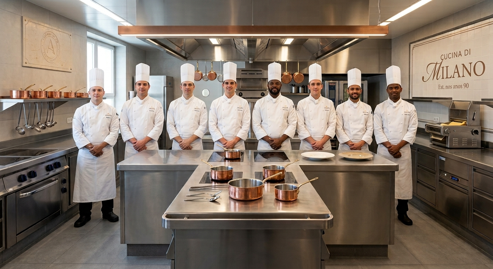

Bem vindo ao Cucina di Milano!
Venha ter uma experiência gastronômica única! Saboreie pratos tradicionais da cozinha italiana preparados com ingredientes selecionados.
Venha conhecer nosso cardápio!Nossa História:
A história da Cucina di Milano começou na década de 1990, quando uma família italiana decidiu atravessar o Atlântico em busca de novas oportunidades.
Vindos de uma família que já trabalhava com gastronomia na Itália, seus fundadores trouxeram consigo não apenas receitas e conhecimentos, mas também o desejo de preservar uma tradição familiar. Ao encontrarem no Rio de Janeiro um lugar cheio de possibilidades, decidiram recomeçar e construir aqui uma nova história.
Os primeiros anos foram marcados por muito trabalho, dedicação e desafios. Aos poucos, a pequena casa conquistou seus primeiros clientes e passou a ser reconhecida pela qualidade de seus pratos e pelo cuidado no preparo de cada receita.
Com o passar das décadas, a Cucina di Milano cresceu sem abandonar suas raízes. Receitas transmitidas entre gerações, ingredientes selecionados e o respeito pela tradição italiana continuam fazendo parte da nossa cozinha.
Hoje, seguimos no Rio de Janeiro com o mesmo propósito que guiou nossa família desde o início: oferecer uma experiência verdadeiramente italiana, preservando aquilo que nos trouxe até aqui e criando novas memórias à mesa.
Uma história que começou na Itália, encontrou um novo lar no Brasil e continua sendo escrita a cada prato servido.
Nossa Cozinha

Venha nos conhecer:
Endereço: Av. das Massas, 999
Rio de Janeiro - RJ
Telefones: (21)xxxx-xxxx / (21)xxxxx-xxxx